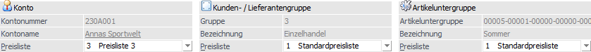
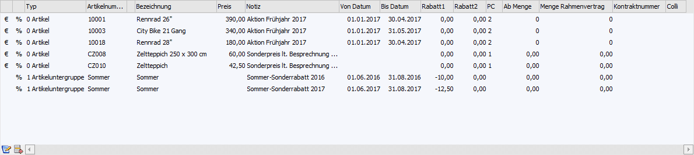
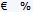
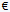
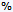
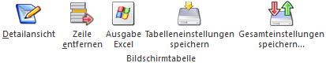

In dem Register "Individuelle Preise" können die Preise und / oder Rabatte in Form einer Tabelle erfasst werden.

Konto / Kunden- / Lieferantengruppe / Artikeluntergruppe

Je nach Ausgangsfenster wird im oberen Bereich des Registers das Ausgangsobjekt dargestellt.
Ø Konto / Gruppe / Artikeluntergruppe
An dieser Stelle wird die Nummer des Ausgangsobjekts dargestellt.
Ø Bezeichnung
Hier wird die Bezeichnung des Ausgangsobjekts angezeigt.
Ø Preisliste
An dieser Stelle wird die Preisliste für die zu erfassenden Preise hinterlegt, wobei über die Kombination "Preisliste im Preiseintrag" und "Preisliste im Personenkonto" die grundsätzliche Zuordnung von Preisen / Rabatten erfolgt. Durch eine Änderung der Preisliste wird der Inhalt der Tabelle "Preise" neu geladen.
Hinweis
Wenn das Fenster über den Personenkontenstamm geöffnet wurde, so wird die Preisliste vom jeweiligen Personenkonto vorgeschlagen. Es ist nicht sinnvoll diese Preisliste zu ändern, da es sich beim Preislistenvorschlag um jene Preisliste handelt, die auch in der Belegerfassung für diesen Kunden / Lieferanten angezogen wird.
Tabelle "Preise"

In der Tabelle "Preise" werden die Preise und Rabatte für die Artikel bzw. Artikeluntergruppen, für die Kunden und Lieferanten und für die Kunden- bzw. Lieferantengruppen hinterlegt. Folgende Eingabefelder stehen zur Verfügung:
Ø

PreiskennzeichenIn den ersten beiden Spalten wird symbolisch die Preisart dargestellt.
ü - Preis und Rabatt
Es handelt sich
bei der Zeile um einen Preis- und Rabatteintrag.
ü

- Preis
ü

- RabattHinweis
Bei neuen Preiszeilen wird immer das Kennzeichen "Preis und Rabatt" vorgeschlagen. Eine Änderung des Preiskennzeichens ist über das Register "Detailansicht" möglich.
Ø Typ
Die Auswahl der Typen ist immer davon abhängig, aus welchem Stammdatenbereich das Fenster angesprochen wurde.
ü Personenkonten
Es stehen die
Typen "0 - Artikel" und "1 - Artikeluntergruppe" zur Verfügung. D.h. es kann
definiert werden, ob der Eintrag nur für einen bestimmten Artikel oder für alle
Artikel einer Artikeluntergruppe gelten soll.
ü Kunden-/Lieferantengruppen
Es
stehen die Typen "0 - Artikel" und "1 - Artikeluntergruppe" zur Verfügung. D.h.
es kann definiert werden, ob der Eintrag nur für einen bestimmten Artikel oder
für alle Artikel einer Artikeluntergruppe gelten soll.
ü Artikeluntergruppen
Es stehen
alle Preistypen ("1 - Verkaufspreis", "2 - Kundengruppenpreis", "3 - Kundenspez.
Preis", "11 - Einkaufspreis", "12 - Lieferantengruppenpreis" und "13 -
Lieferantenspez. Preis") zur Verfügung. D.h. es kann gewählt werden, für wen der
Eintrag dieser Artikeluntergruppe gelten soll (nur für bestimmte Kunden, oder
für alle Kunden einer Kundengruppe, usw.)
Ø Artikelnummer/Konto/Gruppe
Abhängig vom zuvor gewählten Typen kann hier der Artikel, das Personenkonto oder die Kunden- / Lieferantengruppe hinterlegt werden, für welche/n/s der Eintrag gelten soll.
Ø Bezeichnung
In dieser Spalte wird die Bezeichnung des zuvor gewählten Objekts angezeigt.
Ø Preis
Bei Zeilen der Preisart "Preise" bzw. "Preis und Rabatt" kann an dieser Stelle der Preis hinterlegt werden.
Hinweis
Wenn das Fenster "Individuellen Preise" über den Personenkontenstamm oder über den Kunden- / Lieferantengruppenstamm aufgerufen wurde, so kann nach Hinterlegung einer Artikelnummer, mit Hilfe der Taste F8, das Fernster "Preisinformation" geöffnet werden. In diesem werden alle Preislisteneinträge des Artikels dargestellt.
Ø Notiz
In der Spalte "Notiz" kann eine individuelle Beschreibung für die einzelnen Preise hinterlegt werden.
Ø Datum von / Datum bis
In diese Felder wird der Gültigkeitszeitraum des Preises / Rabatts hinterlegt.
Ø Rabatt 1 / Rabatt 2
Bei Zeilen der Preisart "Rabatt" bzw. "Preis und Rabatt" können pro Preiszeile 2 Zeilenrabatte hinterlegt werden.
Hinweis
Ein Rabatt muss im Minus erfasst werden, ein Zuschlag hingegen positiv.
Achtung
Diese Rabatte übersteuern die Rabattmatrix (d.h. das Rabattsystem bestehend aus Rabattleiste und Rabattspalte). Soll mit der Matrix gearbeitet werden, so müssen die Eingaben hierfür im Register "Detailansicht" erfolgen.
Ø PC (Provisionscode)
An dieser Stelle kann ein Provisionscode hinterlegt werden, welcher die Hinterlegung aus dem Artikelstamm (Register "Preise" - Unterregister "Preise" - Feld "Provisionscode") übersteuert.
Ø ab Menge
An dieser Stelle wird die Stückzahl hinterlegt, ab wann der Preis / Rabatt gelten soll.
Ø Menge Rahmenvertrag / Kontraktnummer
Handelt es sich um einen Kontraktpreis (Kontrakt = Rahmenvertrag), so werden in diesen Spalten die Menge gemäß Kontrakt und die Kontraktnummer angezeigt.
Hinweis
Die Anlage bzw. Pflege von Rahmenverträgen (d.h. Kontrakten) findet mit Hilfe des Programms "Kontakte Erfassen" (WinLine FAKT - Erfassen - Kontraktverwaltung) statt.
Ø Colli
Handelt es sich um einen Eintrag der Preisart "Preis und Rabatt" oder "Preis", so kann die Spalte "Colli" ausgefüllt werden. Durch eine Eingabe an dieser Stelle wird der Basis-Colli aus dem Artikelstamm (Register "Preise" - Unterregister "Preise") für die Belegerfassung und den automatischen Einkauf übersteuert.
Tabellenbuttons

Ø Detailansicht
Es wird das Register "Detailansicht" aufgerufen, in welchem die Daten des aktuellen Preises editiert werden können.
Ø Zeile entfernen
Durch Anwahl des Buttons wird die markierte Preiszeile gelöscht.
Ø Ausgabe Excel
Durch Anwahl des Buttons "Ausgabe Excel" wird der Inhalt der Tabelle nach Microsoft Excel übergeben.
Ø Tabelleneinstellungen speichern
Die Spalten einer Tabelle können grundsätzlich an beliebige Positionen verschoben, bzw. in der Breite entsprechend angepasst werden. Durch Anwahl des Buttons "Tabelleneinstellungen speichern" werden die Einstellungen benutzerspezifisch gespeichert und bei dem nächsten Aufruf des Programmpunktes wieder vorgeschlagen.
Ø Gesamteinstellungen speichern
Im Gegensatz zu "Tabelleneinstellungen speichern" können mit "Gesamteinstellungen speichern" mehrere Tabellenaufbauten gespeichert und nach Wunsch geladen werden. Zusätzlich werden Sonderfunktionen der Tabelle (z.B. "Spalte gruppieren") ebenfalls bei der Speicherung bedacht.